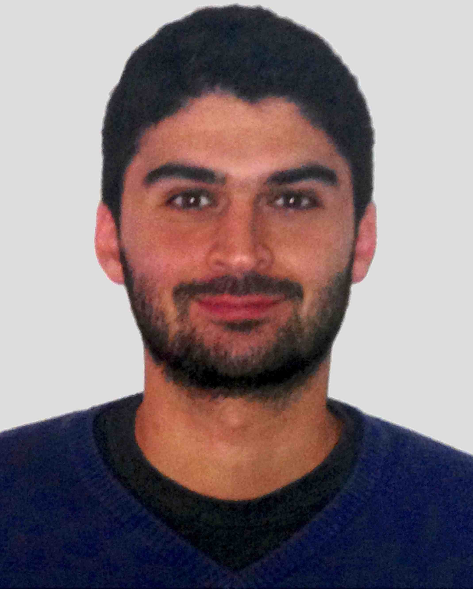

<!-- Begin Body -->
<div class="container">
    <div class="row">
        <div class="col-md-2">
            {% include sidebar.html %}
        </div>
        


        <div class="col-md-10 main">

            <!-- Top row -->
            <div class="row">
              <h2></h2>
              <div class="col-md-3">
                
              </div>

              <div class="col-md-4">
                  <h3>Megasthenis Asteris</h3>
                  <br />
                  UTA<br />
                  1616 Guadalupe St<br />
                  Austin, TX 78701<br />
                  <br />
                  <span>megas</span>@utexas.edu
              </div>
            </div>

            <!-- About row -->
            <div class="row">
                <div class="col-md-12">
                    <h2></h2>
                    I am a graduate student in the ECE Department of the <a href="https://www.utexas.edu/">University of Texas at Austin</a>, under 
                    <a href="{{ site.data.people.dimakis.website }}">{{ site.data.people.dimakis.name }}</a>.
                    Our group moved to Austin in Spring 2013.
                    Prior to that, I spent the first two and a half years of graduate school in the Electrical Engineering Department of the <a href="http://www.usc.edu">University of Southern California</a> in Los Angeles.
                    I received my Diploma in Electronic and Computer Engineering in 2010 from the <a href="http://www.tuc.en"> Technical University of Crete</a>, Chania, Greece, under the supervision of Assistant Prof. 
                    <a href="{{ site.data.people.karystinos.website }}">{{ site.data.people.karystinos.name }}</a>.
                </div>
            </div>

            <div class="row">
              <div class="col-md-12">
                <h2>Publications</h2>

                <h3>Conferences</h3>
                {% assign PUBLICATIONTYPE = "conference" %}
                {% include publicationlist.html %}

                <h3>Journals</h3>
                {% assign PUBLICATIONTYPE = "journal" %}
                {% include publicationlist.html %}

                <h3>Other</h3>
                {% assign PUBLICATIONTYPE = "other" %}
                {% include publicationlist.html %}
              </div>
            </div> <!-- publications end -->
        </div>
    </div> <!-- row -->
</div> <!-- container -->


